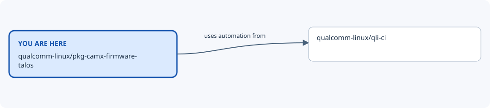

Repository map: qualcomm-linux/pkg-camx-firmware-talos¶
You are here: qualcomm-linux/pkg-camx-firmware-talos. This view shows recorded nearby repositories, including
both incoming and outgoing relationships. Dashed lines mean optional or indirect
relationships; the table states when each connection applies.

From |
Relationship |
To |
When it applies |
Evidence |
|---|---|---|---|---|
qualcomm-linux/pkg-camx-firmware-talos |
uses automation from |
qualcomm-linux/qli-ci |
GitHub Actions integration at the evidence revision; workflow/action refs are specified by the calling files. This is not a runtime dependency. |
Nearby repositories¶
qualcomm-linux/pkg-camx-firmware-talos — Repository purpose needs review; open the repository for its maintained documentation.
qualcomm-linux/qli-ci — Central location for pkg reusable workflows
Full ecosystem map¶
Return to the Qualcomm repository map for the wider ecosystem, other nearby views, and the locally browsable site. Relationship claims apply to the linked evidence revisions; use release-compatible revisions for a build.
Generated from data/repositories.json (SHA-256 602a68056238817dccee9f98db5c06ea20d0bb165a53a0c23ff2d0423240dfca).
Edit the shared dataset and regenerate this view to change relationships.